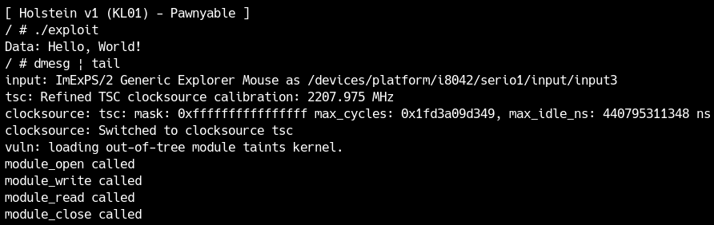
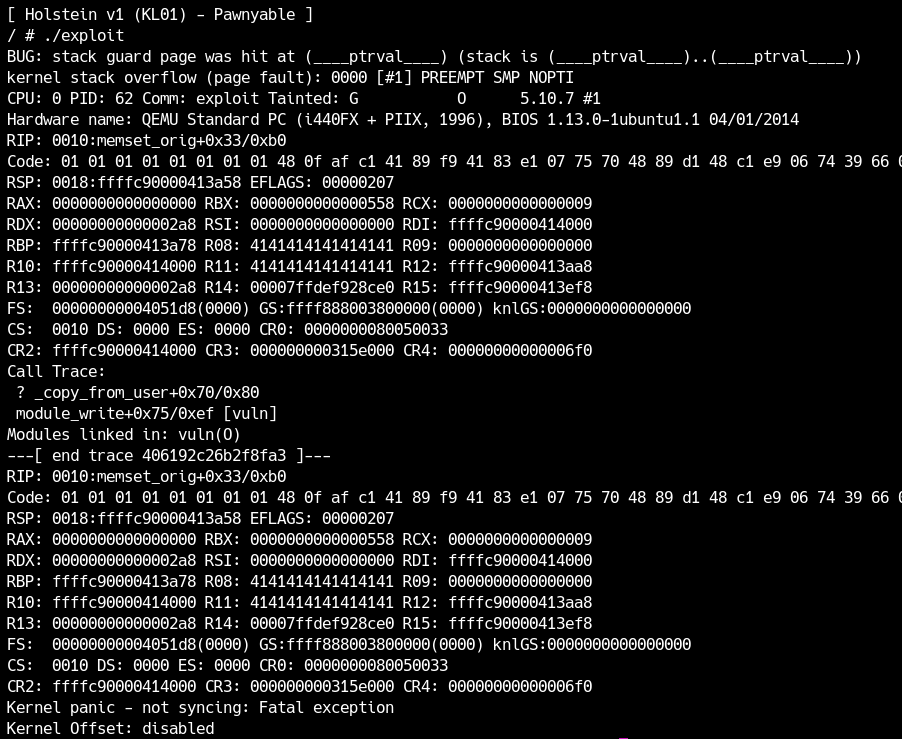
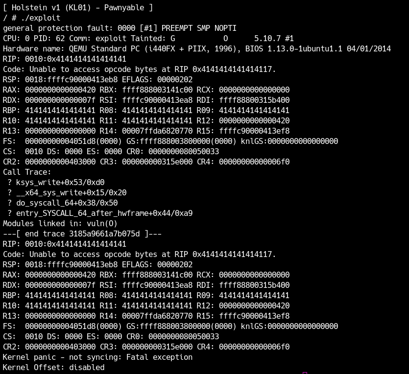

In the LK01 (Holstein) chapter, you will learn about the basic attack methods of Kernel Exploit. If you have not downloaded LK01 in the introduction chapter, first download it.Exercise LK01Please download the file.
qemu/rootfs.cpio becomes the file system. here mount Create a directory and extract cpio there. (Please create it with root privileges.)
Checking the initialization process
first /init There is a file called .This is the first process executed in user space after the kernel is loaded. In CTF, etc., processes such as loading kernel modules may be written here, so be sure to check it.
This time /init is standard for buildroot, and processes such as loading modules are /etc/init.d/S99pawnyable It is listed in.
1 |
|
There are a few lines that are important here. first
1 | echo 2 > /proc/sys/kernel/kptr_restrict |
However, as we have already learned, this is a command to control KADR, and you can see that KADR is enabled. This is a hindrance when debugging, so let's disable it.
It is commented out next
1 | #echo 1 > /proc/sys/kernel/dmesg_restrict |
However, this is often enabled for CTF problems. What it means is whether to allow dmesg to general users. Since this is a practice, dmesg is allowed.
next
1 | insmod /root/vuln.ko |
is loading the kernel module.
insmod with command /root/vuln.ko Load the module called and then mknod in /dev/holstein into a character device file called holstein It is associated with a module named .
lastly
1 | setsid cttyhack setuidgid 1337 sh |
However, this sets the user ID to 1337.sh is running. It is thanks to this command that the shell starts without a login prompt.
When debugging, you can get a root shell by setting this user ID to 0, so if you have not completed the example yet, please change it.
Also,/etc/init.d There are other S01syslogd or S41dhcpcd There are initialization scripts such as These configure network settings, etc., but they are not needed for debugging in this exploit, so we recommend that you move them to a different directory to prevent them from being called. This will speed up boot time by a few seconds.
In the directory rcK, rcS, S99pawnyable It is OK if it remains.
Holstein module analysis
In this chapter, we will learn about Kernel Exploit using a vulnerable kernel module named Holstein.src/vuln.c The source code for the kernel module is available at , so let's read it first.
Initialization and termination
When writing a kernel module, always write initialization and termination processing.
On line 108
1 | module_init(module_initialize); |
The functions for initialization and termination are specified here. First of all, initialize module_initialize Let's read it.
1 | static int __init module_initialize(void) |
In order to be able to manipulate kernel modules from user space, we need to create an interface. The interface is /dev or /proc It is often made in cdev_add character device because it uses /dev This is a type of module that operates through. However, at this point /dev The file below will not be created. earlier S99pawnyable As we saw in /dev/holstein teeth mknod It was created using commands.
Now,cdev_init The second argument of the function module_fops We are passing a pointer to the variable. This variable is a function table,/dev/holstein against open or write When such an operation occurs, the corresponding function will be called.
1 | static struct file_operations module_fops = |
In this module open, read, write, close Only the processing for these four functions is defined, and the others are unimplemented (nothing happens when they are called).
Finally, the module release process simply removes the character device.
1 | static void __exit module_cleanup(void) |
open
module_open Let's take a look.
1 | static int module_open(struct inode *inode, struct file *file) |
printk There's an unfamiliar function called , which outputs a string to the kernel's log buffer.KERN_INFO That is the log level, and there are other KERN_WARN etc. The output is dmesg You can check it with the command.
next kmalloc I am calling the function.
This is in kernel space malloc You can allocate a specified size of space from the heap. This time char* global variable of type g_buf to BUFFER_SIZE(=0x400) byte area is reserved.
This module open Then the area of 0x400 bytes will be g_buf I found out that I can secure it.
close
next module_close see.
1 | static int module_close(struct inode *inode, struct file *file) |
kfree teeth kmalloc Corresponding to kmalloc Free the heap area allocated in .
once to the user open The module will eventually be close I secured it first because g_buf It is a natural process to release. (The user space program explicitly close Even if you don't call , the kernel automatically calls the close call. )
Actually, there is already a vulnerability that leads to LPE at this stage, but we will deal with that in a later chapter.
read
module_read is the user read This process is called when a system call etc. is called.
1 | static ssize_t module_read(struct file *file, |
g_buf from BUFFER_SIZE only kbuf into a stack variable called memcpy I am copying it.
next,_copy_to_user I am calling the function. As already explained in the SMAP section, this is a function that safely copies data to user space.copy_to_user not _copy_to_user, but this is a version that does not detect stack overflows.copy_to_user It will be. It is not normally used, but this time it is used to introduce a vulnerability.

copy_to_user or copy_from_user is defined as an inline function and does size checking when possible.
In summary,read The function is g_buf The process is to copy the data to the stack once and then read the requested size of data.
write
lastly module_write Let's read.
1 | static ssize_t module_write(struct file *file, |
first _copy_from_user data from user space with kbuf It is copied to a stack variable called . (This is also a version that does not detect stack overflow.copy_from_user is. )lastly memcpy in g_buf up to BUFFER_SIZE only kbuf Copying data from.
stack overflow vulnerability
Now that you've read through the kernel modules, how many vulnerabilities have you found?
If you've tried Kernel Exploit, you've probably found at least one vulnerability. This section covers stack overflow vulnerabilities in the following locations:
1 | static ssize_t module_write(struct file *file, |
Size to copy in line 9 count comes from the user, whereas kbuf is 0x400 bytes, so there is a trivial stack buffer overflow. The function call mechanism in kernel space is the same as in user space, so you can rewrite return addresses and execute ROP chains.
Ignition of vulnerability
Before exploiting the vulnerability, let's write a program that uses this kernel module normally and check that it works. This time, I wrote the following program.
1 |
|
write and write "Hello, World!"read It's a program that you just read.
Let's run this on the kernel.

You can see that it is working as expected. Also, when I checked the logs generated by the kernel module, no errors were found.
Next, let's try to cause a stack overflow. Something like this would be fine.
1 |
|
Execute.

Some kind of ominous message was output.
When a kernel module causes abnormal processing like this, the whole kernel usually crashes. At that time, the cause of the crash, the state of the registers at the time of the crash, and the stack trace are output. This information is very important when debugging Kernel Exploits.
The cause of this crash is
1 | BUG: stack guard page was hit at (____ptrval____) (stack is (____ptrval____)..(____ptrval____)) |
It becomes.ptrval is a pointer, but it is hidden by KADR.
The register I am concerned about is RIP, but unfortunately it is not 0x414141414141414141.
1 | RIP: 0010:memset_orig+0x33/0xb0 |
As mentioned in the cause of the crash,copy_from_user It seems that the end of the stack (guard page) was reached when writing with . The cause is writing too much, so try reducing the amount of writing.
1 | write(fd, buf, 0x420); |
The crash message will then change.

This time it's a general protection fault and I'm getting RIP!
1 | RIP: 0010:0x4141414141414141 |
In this way, RIP can be obtained from stack overflow in kernel space as well as in user space. In the next section, you will learn how to escalate privileges.